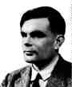
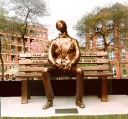

Turing studied at King's College, Cambridge. In 1936 he published On Computable Numbers, a paper in which he conceived an abstract machine, now called a Turing machine, which moved from one state to another using a precise set of rules.
He was a graduate student at Princeton University from 1936 to 1938 and returned to England in 1938. At Princeton he undertook research under Church's supervision and his doctorate was awarded in 1938 for a thesis entitled Systems of Logic Based on Ordinals. During World War II, he worked in the British Foreign Office. Here he played a leading role in efforts to break enemy codes.
In 1945 he joined the National Physical Laboratory in London and worked on the Automatic Computing Engine (ACE). Turing's design was at that point an original detailed design and prospectus for a computer in the modern sense, and in the 1945-8 period, led the world. (The size he planned, regarded then as hopelessly over-ambitious, was for 4K bytes of storage)
In 1948 Turing became deputy director of the Computing Laboratory at Manchester, where the Manchester University Computer, the first actually running example of an electronic stored program computer, was being built.
He also worked on theories of artificial intelligence, and on the application of mathematical theory to biological forms. In 1952 he published the first part of his theoretical study of morphogenesis, the development of pattern and form in living organisms.
Turing was arrested for violation of British homosexuality statutes in 1952. He died of potassium cyanide poisoning while conducting electrolysis experiments. An inquest concluded that it was self-administered but it is now thought by some to have been an accident.
Alan M Turing was elected to the Royal Society of London in 1951.
There is now a project to erect a bronze statue of Alan Turing in a Manchester park.
It would look something like this.
